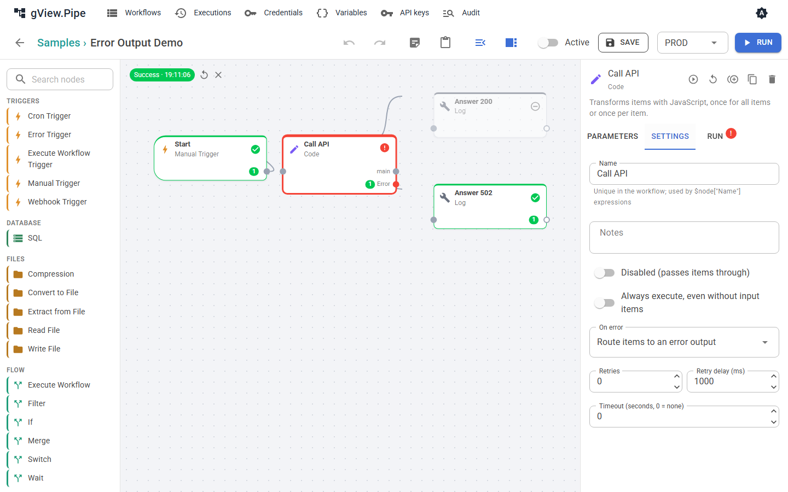

Fehlerbehandlung¶
Ein Node kann fehlschlagen: Ein Skript endet mit einem Exit-Code ungleich 0, ein HTTP-Aufruf liefert einen Fehler, eine Datenbank ist nicht erreichbar. Was dann passiert, bestimmst du pro Node und pro Workflow mit einem optionalen Fehler-Workflow.
Node-Einstellungen¶
Öffne einen Node und wechsle auf den Tab Settings.

| Einstellung | Bedeutung |
|---|---|
| Retries, Retry delay (ms) | Der Node wird nach einem Fehler bis zu so oft wiederholt. |
| Backoff, Max delay (ms) | Fixed delay wartet vor jeder Wiederholung gleich lang. Exponential verdoppelt die Wartezeit nach jedem Fehlversuch (1 s, 2 s, 4 s, …), bis zur maximalen Wartezeit (0 = keine Grenze). Erscheint, wenn Retries größer als 0 ist. |
| Timeout (seconds) | Der Node wird nach dieser Zeit abgebrochen. 0 bedeutet kein Timeout. |
| On error | Was der Workflow tut, wenn der Node trotzdem fehlschlägt (siehe unten). |
On error¶
| Modus | Was passiert | Status des Laufs |
|---|---|---|
| Stop the execution (Standard) | Der Lauf wird abgebrochen. Nodes nach dem fehlgeschlagenen laufen nie. | Error |
| Continue with the input items | Der Fehler wird am Node vermerkt, und der Node gibt seine Eingangs-Items am normalen Ausgang weiter (ein Skript-Node gibt seine Ergebnisse weiter, zum Beispiel den Exit-Code). Der Workflow läuft weiter. | Success |
| Route items to an error output | Der Node bekommt einen zweiten Ausgang, error. Die Items gehen dorthin statt zum normalen Ausgang, jeweils mit einem Feld error { "message": …, "type": … }. Der normale Ausgang bleibt leer. |
Success |

Ein Node, dessen Eingänge alle leer sind, wird übersprungen, ebenso die Nodes danach. Genau das macht den Fehlerausgang nützlich: Verbinde einen Zweig mit dem normalen Ausgang und einen anderen mit dem Ausgang error. Es läuft nur der Zweig, der Items bekommt.
Note
Bei Continue oder Error output gilt der Lauf als erfolgreich. Das hat zwei Folgen: Der Fehler-Workflow wird nicht gestartet, und ein Webhook-Aufrufer bekommt kein 500, außer du sendest es selbst.
Fehler-Workflows¶
Ein Fehler-Workflow ist ein normaler Workflow, der mit einem Error Trigger beginnt. Du wählst ihn im Workflow-Panel des fehlschlagenden Workflows (Error workflow), für alle Workflows einer Gruppe im Gruppen-Dialog oder für die ganze Instanz in der Konfiguration (Pipe:ErrorWorkflowId). Ein Workflow nutzt den ersten, der auf Workflow → Gruppe → Instanz gesetzt ist; None am Workflow schaltet ihn ab.
- Er läuft, wenn ein Lauf des Workflows fehlschlägt und von einem Trigger (Cron, Webhook) gestartet wurde oder ein Replay ist. Läufe, die du von Hand im Editor startest, starten ihn nicht.
- Ein fehlschlagender Sub-Workflow startet ihn nicht: Sein Aufrufer schlägt ebenfalls fehl und meldet es, mit dem Sub-Workflow in
subWorkflow. Fängt der Aufrufer den Fehler ab (Continue oder Error output an Execute Workflow), wird nichts gemeldet. -
Er bekommt ein Item, das den fehlgeschlagenen Lauf beschreibt, zum Beispiel für eine Mail mit dem Namen des Workflows und des fehlgeschlagenen Nodes:
{ "workflow": { "id": "…", "name": "…" }, "execution": { "id": "…", "mode": "…", "environment": "…", "startedAt": "…", "error": "…", "url": "…" }, "node": { "id": "…", "name": "…", "error": "…" }, "subWorkflow": { "id": "…", "name": "…", "executionId": "…", "error": "…", "node": { … } }, "suppressed": 0 }Du nutzt es in Ausdrücken, zum Beispiel
{{ $json.workflow.name }}und{{ $json.execution.error }}.urlverweist auf den fehlgeschlagenen Lauf, wennPipe:PublicUrlkonfiguriert ist;subWorkflowgibt es nur, wenn ein Sub-Workflow fehlgeschlagen ist. - Throttle minutes am Error Trigger (Vorgabe 15) startet ihn pro fehlgeschlagenem Workflow höchstens einmal in dieser Zeit. Fehler dazwischen werden insuppresseddes nächsten Laufs gezählt. Mit 0 wird jeder Fehler gemeldet. - Füge demselben Workflow einen Recovery Trigger hinzu, um zu erfahren, wann der fehlgeschlagene Workflow wieder erfolgreich läuft; siehe Fehlerbenachrichtigungen. - Ein Fehler des Fehler-Workflows selbst wird nur ins Anwendungslog geschrieben. Ein Workflow ist nie sein eigener Fehler-Workflow. - Er ändert das Ergebnis des fehlgeschlagenen Laufs nicht. Der Lauf bleibt Error.
Die Beispiele Error Mail, Error Teams und Error Slack verschicken Benachrichtigungen, Error Alerts schreibt ins Log; siehe Benachrichtigung bei Fehlern.
Einen Webhook nach einem Fehler beantworten¶
Ein Webhook, der auf einen Respond-to-Webhook-Node wartet (Trigger und Webhooks), bekommt 500, wenn der Lauf fehlschlägt, weil der Respond-Node nie erreicht wird. Der Fehler-Workflow hilft hier nicht: Er läuft getrennt und kann den Aufruf nicht beantworten.
Um die Antwort selbst zu bestimmen, behandle den Fehler im Workflow:
- Stelle On error des Nodes, der fehlschlagen kann, auf Route items to an error output.
- Verbinde den normalen Ausgang mit einem Respond to Webhook-Node mit Status
200. - Verbinde den Ausgang
errormit einem zweiten Respond to Webhook-Node. Statuscode und Body wählst du selbst, zum Beispiel Status502mit Custom body{{ { error: $json.error.message } }}. - Optional: Setze auf den
error-Zweig vor den Respond-Node einen Send Email-Node (oder einen Log-Node), um benachrichtigt zu werden.
Weil der Zweig ohne Items übersprungen wird, läuft genau einer der beiden Respond-Nodes.
Tip
Mit Continue with the input items kannst du bei einem Respond-Node bleiben. Prüfe das Ergebnis im Node nach dem, der fehlschlagen kann (zum Beispiel mit einem If-Node, der den Exit-Code prüft), und wähle den Statuscode mit einem Ausdruck.
Wenn du eine saubere Antwort und den Fehler-Workflow willst, sende die Benachrichtigung aus dem error-Zweig, wie in Schritt 4. Der Fehler-Workflow startet nur für Läufe, die mit Error enden.
Herausfinden, was fehlgeschlagen ist¶
- Im Editor ist ein fehlgeschlagener Node rot umrandet und trägt ein Fehler-Badge. Sein Tab Run zeigt Eingabe, Ausgabe und Log, einschließlich der Fehlermeldung.
- Webhook-Antworten mit
500enthalten dieexecutionId. Öffne diese Execution in der Historie. - Skripte: Ein Exit-Code ungleich 0 oder eine Ausgabezeile, die zum Fehlermuster passt, lässt den Node fehlschlagen. Die Ausgabe des Skripts steht im Log des Nodes.